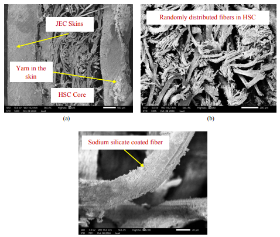
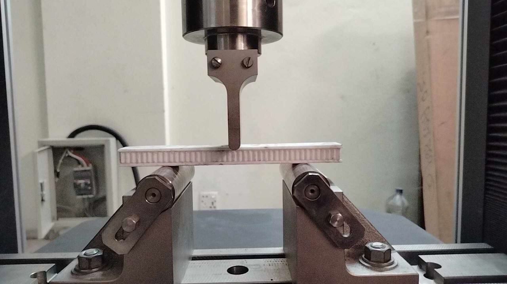

Research
My research focuses on additive manufacturing, composite materials, and biomimetic design.
I am particularly interested in developing sustainable materials and optimizing their mechanical properties
through machine learning–driven design and 3D printing techniques.
|
CV (PDF) /
LinkedIn /
GrabCAD /
GitHub
About
I am Shahinur Hasnat Rahat, a Mechanical Engineer (KUET, 2019–2024) focused on
composites, additive manufacturing, smart materials, and biomimetic design.
My work spans sodium-silicate–treated natural-fiber composites, fire/thermal characterization,
and machine-learning–assisted optimization of 3D-printed structures. I have industry experience as a
Junior Mechanical Design Engineer at PiezoMech Solutions and taught undergraduate courses as a Lecturer
at Shyamoli Textile Engineering College.
Research
Interests: Composites, Additive Manufacturing, Smart Materials, Biomimetic Structures,
Materials Characterization, ML-driven Design Optimization.
Publications

The role of sodium silicate on the thermo-mechanical and fire resistance of novel sandwich structures
M. A. I. Shaikot, C. Biswas, Ahammad, S. H. Rahat
Journal of Sandwich Structures and Materials, under review, 2024
Developed lightweight, fire-resistant sandwich structures using hybrid fiber-reinforced sodium-silicate composites
and jute-fiber epoxy skins; optimized sodium-silicate concentration to improve strength, insulation, and fire resistance.
Investigation on thermal and fire properties of sodium silicate-treated jute fiber reinforced epoxy composites
S. H. Rahat, Md. Arifuzzaman
In preparation, 2024
Evaluates the effect of sodium-silicate treatment on thermal conductivity, fire resistance, hardness,
and impact strength of jute/epoxy composites over multiple solution concentrations (hand lay-up).
Research in Progress

Investigating mechanical properties of a 3D-printed biomimetic structure with three-point bending and ML-driven design optimization
S. H. Rahat, Md. Arifuzzaman — KUET, 2024
Bamboo-inspired sandwich structure (PLA+) fabricated via FDM; mechanical testing with design optimization using machine learning
to enhance structural performance and efficiency.
Selected Engineering Projects
Design & Manufacturing of a Formula Student Car (Team Kilo Flight)
Designer & Mechanical Control Expert, 2020–2024
Designed steering & suspension; ANSYS gear-assembly stress simulations; competition results —
FS UK 2021 (33/57) and FSAE Japan 2023 (53).
Wildfire-Detection & Wildlife-Monitoring Drone (NASA Space Apps 2023)
Team Lead & Mechanical Designer, 2023
Concept and design for wildfire detection & water contamination monitoring; honors —
Global Nominee and Regional 1st Runner-up.
Vaccine-Carrying Drone (Cognizance, IIT Roorkee)
Mechanical Designer, 2021
Autonomous load/unload mechanism; ABAQUS load-capacity simulations to verify operational safety during pandemic logistics.
Achievements
NASA Space Apps 2023 — Global Nominee
NASA Space Apps 2023 — 1st Runner-up (Regional)
SOLIDWORKS Champion (2022)
Cognizance, IIT Roorkee — 1st Runner-up
Formula Student UK 2021 — Rank 33/57
Formula SAE Japan 2023 — Rank 53
Leadership & Teamwork
-
Designer & Mechanical Control Expert — Team Kilo Flight (2020–2024):
Led steering and suspension subsystems, coordinated design reviews and simulation workflows,
mentored junior members for competition deliverables.
-
Chief Policy Analyst — CADers, KUET (2020–2024):
Organized seminars and workshops on professional CAD tools; helped develop campus-wide design culture.
-
Team Lead — NASA Space Apps (2023):
Managed cross-functional team (mechanical, software, sensing) to deliver a working prototype and presentation under a 48-hour deadline.
|